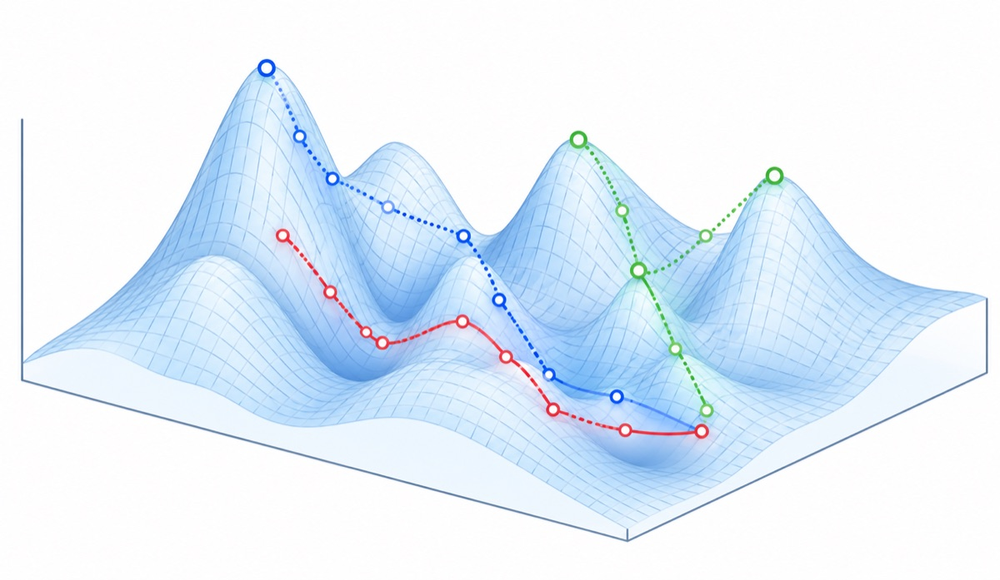
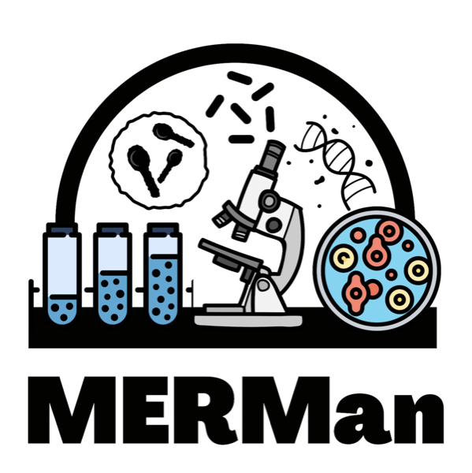

Using biophysics to link molecular biology to evolution
Rules that govern
how microbes change
The Lagator group works at the interface of evolutionary biology, biophysics and molecular biology. We are interested in how the mechanism of molecular and cellular function shape and define how biological systems can change, with the goal of improving the ability to predict the effects of mutations on phenotypes and fitness.
A bacterial promoter, 40 bases. Mutations inside the −35 and −10 boxes tend to change expression; mutations elsewhere often do not. Predicting expression levels directly from sequence is one of the lab’s central questions.
Focus
Research focus

Evolutionary trajectories across a fitness landscape
We want to understand how molecular biology shapes evolution. Mutations drive evolution, but their effects are determined by the molecular mechanisms within cells. By studying not only mutations that lead to adaptation, but also those that do not, we can uncover how these mechanisms constrain evolution.
Above all, we like to play with bacteria and learn cool things about them, with the ultimate goal of better predicting how bacteria evolve. This means a lot of different things, so check out the ongoing projects in the Research and Team sections to get a better idea of what we are thinking about these days.
Group leader
Mato Lagator
Sir Henry Dale Fellow, Wellcome Trust & Royal Society
I did my undergrad at Harvard University and my Ph.D at the University of Warwick, where I studied evolution of resistance in a cool microbial species called Chlamydomonas reinhardtii. In 2013, I started a postdoc at IST Austria with Calin Guet and Jon Bollback (now at Liverpool), slowly defining my major research interest – the relationship between molecular biology and evolution.
I also attended a Master’s course at the University of Applied Arts in Vienna, where I started developing some semblance of an artistic practice. I started my group in Manchester in 2020.
Wider community

Microbial Evolution Research Manchester
The Lagator Group is part of the Microbial Evolution Research Manchester (MERMan) team at the University of Manchester. Together, we investigate key questions in microbiology, evolution, and systems biology, aiming to generate insights with both academic and practical implications. We also collaborate with many other researchers at Manchester, including with bioengineers and synthetic biologists at the Manchester Institute of Biotechnology; modellers and structural biologists in the Faculty of Science and Engineering; medical microbiologists and health experts in the Faculty of Biology, Medicine and Health.
MERMan is on Bluesky.
Support
Funding and collaborators
The group is supported by a Wellcome Trust–Royal Society Sir Henry Dale Fellowship. Because the work sits between disciplines, much of it is done jointly with biophysicists, theoretical biologists and modellers.